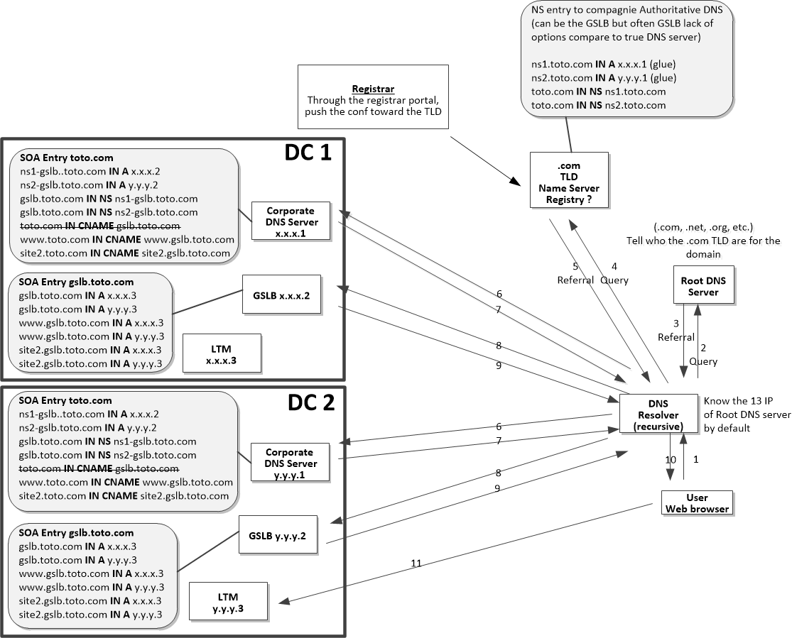

DNS Steps to resolve a web site url in IP :
!! The CNAME is normally not allowed at the apex, so I need to find another way) !! The following steps are when nothing is yet cached in any servers. This use case is for a recusive DNS resolver.
The user try to access www.toto.com from his browser. His computer send the DNS query to the system's configured DNS Resolver. For instance 9.9.9.9 (quad9).
The recursive (not iterative) DNS resolver send the DNS query to one of the 13 root servers to know how to resovle “.com” The root servers are know by default by all resolvers.
The root server answer with a referral to the TLD server for “.com”
The DNS resolver query the TLD to know who is in charge for resolving “toto.com”
The TLD server answer with the glue records configured by the website owner through the registrar portal.
The DNS resolver query Authoritative DNS server of the company for the IP address of “www.toto.com”
The Authoritative DNS Server of the company answer with a CNAME of www.gslb.toto.com and the IP address of the GSLB NS in charge of the web site.
The resolver query the GSLB to have the IP address of “www.gslb.toto.com”
The GSLB answer with the IP address of the loadbalancer in charge of the IP address of the web site.
The DNS Resolver forward the answer to the user.
The user web browser can directly access the IP address of the web site.
1. This blog was mostly inspired from https://www.cloudflare.com/learning/dns/dns-server-types/ >
2. This link might help regarding the TTL https://www.bortzmeyer.org/forcer-ttl.html